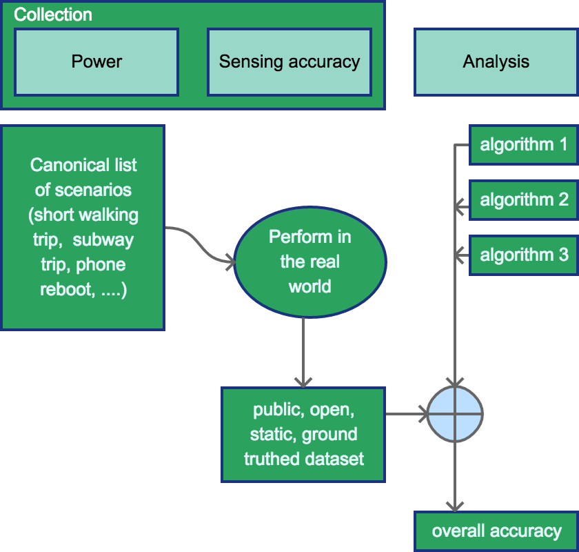

Analysis Improvements¶
As algorithms rule more of our lives, there are concerns that they are not well
understood. There is a need for greater transparency into the algorithm
mechanisms (how does my feed work?") and the algorithm outputs (what is
this algorithm trying to determine about me?"). As researchers propose
multiple algorithms, we need mechanisms to compare their accuracy against one
another, so that users can choose the algorithms that are most suitable for
themselves. Finally, if we want algorithm results to drive policy and choose
between competing real-world alternatives, the inferences need to be generated
from algorithms with well-defined error parameters.
As Micheal Jordan argued in his blog post (https://rise.cs.berkeley.edu/blog/michael-i-jordan-artificial-intelligence%e2%80%8a-%e2%80%8athe-revolution-hasnt-happened-yet/):
In the current era, we have a real opportunity to conceive of something historically new — a human-centric engineering discipline.
These challenges are common across multiple domains. The standard technique to overcome them is to use benchmarking. For example, the ImageNet benchmark is commonly used to evaluate algorithms for image processing. The RISE lab has recently announced an initiative to identify benchmarking datasets for multiple common machine learning algorithms (https://rise.cs.berkeley.edu/blog/mlperf-spec-for-ml/).
However, there are several specific challenges to working on location data and travel patterns. 1. The data is privacy sensitive. This has led to a dearth of publicly available, ground truthed data that can be used for benchmarking. The standard datasets either do not have ground truth (e.g. fMRI, MDC), or are old and based on GPS devices (e.g. GeoLife) so do not have other sensor data. 2. Inferences that deal with user perceptions and motivations typically require periodic user interaction, not only sensor data. It is unclear how to evaluate them using static datasets. 3. Similarly, data collection does not occur in isolation - while it is possible to collect very high frequency, high quality data from smartphones, it comes at a significant energy cost. Is it possible to compensate for low power data collection with smart algorithms? We will need to evaluate the data collection and inference together to answer such questions. 4. As with all benchmarks, there are questions about how applicable the benchmark is. This is particularly true given the potentially combinatorial nature of multi-modal travel patterns (https://www.overleaf.com/read/khdbzrxsgkyz, section "Proposed Benchmarking Details") and the differences in modes between countries (e.g. developed countries typically focus on 5 modes - walk, bicycle, bus, car, train, but developing countries make heavy use of motorcycles and informal transit). While this can theoretically be handled by expanding the benchmark, the expansion itself needs to be data-driven.
Before we discuss how to address these challenges, let us understand the two broad evaluation mechanisms. - data to code: ground-truthed datasets are made publicly available, researchers download them and run their algorithms on them (e.g. MNIST, http://yann.lecun.com/exdb/mnist/) - code to data: researchers upload their code, system runs it against the data and generates a score. If multiple researchers submit algorithms, they can compete to get the best results. Note that in this case, the underlying data does not need to be published, although it typically is. (e.g. kaggle)
I argue that we need to support both kinds of datasets in order to evaluate machine learning algorithms in this domain. Machine learning researchers will need access to raw data for exploratory analysis and algorithm development. But because location data is so privacy sensitive, we will also need to support code-to-data so that we can evaluate the algorithms without exposing the raw data.
While applying these approaches to the mobility domain, we can see the broad outlines of solutions, although there are still unresolved challenges.
Data to code: Crowdsourced benchmarking¶
This would involve creating a completely open and public dataset based on researchers performing a consistent set of pre-defined trips that constitute a benchmark. Since the trips are performed to satisfy the benchmark, they do not represent real travel patterns, and do not constitute a privacy risk. For more details, see em-benchmark (currently under development).
Static dataset¶
In the simplest form, this data collection will create a static, ground truthed dataset that can be used to compare new inference algorithms. Note that because the dataset is static, the algorithms cannot experiment with different data collection techniques or user interaction; they can only experiment with featurization and ML techniques such as k-NN, regression models, kernels etc. This is basically what kaggle does today; technically we could publish this dataset as part of a Kaggle contest. This would conceptually look like

Dynamic user interaction¶
It is more challenging to account for differences in the data collection, including the use of alternate sensors and user confirmation. We can cover the use of alternate sensors and the power-accuracy trade-off by requiring researchers to perform the benchmark set of trips with their data collection mechanism. But how do we account for user confirmation? I actually don't know the answer to this question. Do we give algorithms a budget of a certain number of prompts? How do we come up with that budget? Or do we just have the number of prompts as a different argument for the metric?
Code to data: Running algorithms against private data¶
In the previous section, we looked at comparing multiple algorithms against a standard, public dataset. Although this is the closest to existing benchmarking techniques, given the combinatorial variations in travel patterns, especially with multi-modal travel, it would be good to evaluate algorithms against real data. However, we do not want to release real data because of the privacy implications. Instead, we want to run the algorithms directly against the mobility data and only return the results.
Algorithm execution with privacy¶
Conceptually, this approach can use techniques from the privacy task to run uploaded scripts/queries directly against user data. However, we need additional investigation into how exactly this would work.
- If we run the algorithms directly against encrypted data, how does the executor see the results to compare them? Note that the idea behind working directly with encrypted data is that you return encrypted results which the user can decrypt using their key. But in this case, the evaluator would not have the user's key.
- If we use a secure execution environment instead, do we place restrictions on the scripts? How? Because allowing execution of arbitrary code against the data could allow people to just upload the data to their own servers.
- alternatively, if we want to use the aggregate queries, would the scripts that people want to use work against aggregated data (e.g. sum/mean, etc)? I suspect not. Can we use the sum/mean methods to compare results instead of aggregating them?
Collecting ground truth¶
In order to evaluate the accuracy against real travel patterns, we need ground truth for them. While we can expect benchmarked data to have ground truth, it is unlikely for regular users to provide a lot of ground truth without additional prompting. We may also to need prompt users in order to train algorithms that incorporate reinforcement learning. However, if we prompt too often (e.g. for every trip), we run the risk of having the user get annoyed and uninstalling the app. We need to come up with a mechanism that allows the user to control how often she is prompted, and then prompts based on the budget.
Task list¶
Given all these requirements, it looks like we have a few sub-projects that people can choose to tackle. - Explore kaggle or (better) build a simple system similar to kaggle that runs static algorithms against existing data repositories. NREL has a travel data repository and it would be great to talk with them about hosting something like this and running analysis challenges as part of transportation conferences. - Use examples of power v/s accuracy and determine how to measure attention/prompting for user interaction - Build a prompting mechanism that potentially works with an ensemble of regular algorithms and an attention budget. A SUPERB student worked on the prompting harness earlier. - poster: http://people.eecs.berkeley.edu/~shankari/SteffensBerkeleyPoster.pdf - slides: http://people.eecs.berkeley.edu/~shankari/SteffensEndOfSummerPresentationBerkeley.pptx - one-slide architecture summary: http://people.eecs.berkeley.edu/~shankari/Experiment_Diagram.pdf - current code: https://github.com/jensteff/e-mission-server/pull/1), but did not complete it. - Work with the person focusing on the privacy task to run at least static algorithms against private data. This has the most dependencies and is the least well-understood piece of the project.